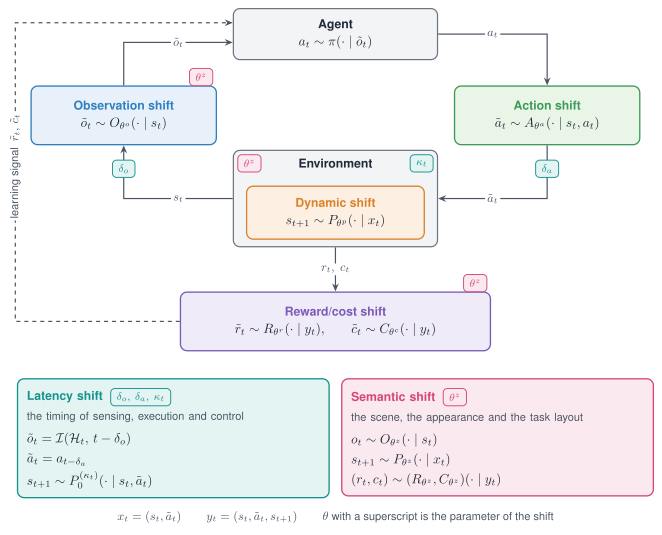

Shift Sources and Modes¶
RobustRLlib declares a deployment shift as data. A shift has a source, which says what is perturbed, and a mode, which says how the intervention is built. A shifted environment is a base task with one wrapper per shift, and the task code is not modified.

The six shift sources on the loop between agent and environment, in the notation of the paper. Four of them act on one component of the loop. The Latency shift and the Semantic shift act at several points, which the small tags mark.
Summary¶
| Aspect | Shift sources and modes |
|---|---|
| Interface | make_robust(env_id, shifts=[...], seed=...) returns an environment with the standard reset and step |
| Declaration | ShiftSpec(target, mode, params, schedule, seed), or the same keys in YAML |
| Sources | Six shift sources, written with eight targets |
| Modes | Five modes, written with 22 mode names, the schedule field and the list of shifts |
| Evaluation | A grid condition is a list of shifts; see Evaluation Protocol |
| Backends | MuJoCo and Box2D; see Add a Backend |
Shift sources¶
A shift source names the component of the decision process that is perturbed.
| Shift | What it perturbs | Target in code | Page |
|---|---|---|---|
| Dynamic shift | Physical parameters, external forces, the simulator state | dynamics, transition |
Dynamic shift |
| Observation shift | The observation returned to the policy | observation |
Observation shift |
| Action shift | The action between policy and simulator | action |
Action shift |
| Reward/cost shift | The reward, or a cost field in info |
reward, cost |
Reward/cost shift |
| Latency shift | When actions, observations and rewards arrive | latency |
Latency shift |
| Semantic shift | Colours, lights, cameras and object positions | appearance; dynamics for position offsets |
Semantic shift |
The definitions of the figure, one shift source per row:
| Shift | Definition |
|---|---|
| Dynamic shift | |
| Observation shift | |
| Action shift | |
| Reward/cost shift | |
| Latency shift | |
| Semantic shift |
A parameter with a superscript belongs to one shift source. Setting every parameter to its nominal value gives back the nominal task.
Shift modes¶
A mode names how the intervention is built. Three modes are selected by the mode name of a
shift; the other two are selected by the schedule field and by the list of shifts.
| Mode | How the intervention is built | How it is declared | Page |
|---|---|---|---|
| Stochastic | Drawn from the seeded random generator of the wrapper | A mode name such as gauss or uniform |
Stochastic |
| Adversarial | Computed from the current observation or action to counter the policy | The mode name adversarial, or oppose, rotate, oppose_goal |
Adversarial |
| Parametric | Fixed by the parameters | A mode name such as scale, set or shift |
Parametric |
| Non-stationary | A stationary shift whose intensity follows a schedule within the episode | The schedule field |
Non-stationary |
| Composition | Several shifts acting at once | The order of the shifts list |
Composition |
Sources by mode¶
Each cell lists the mode names that the code accepts. The last column lists the mode names that read a schedule. Composition applies to every shift.
| Shift | Stochastic | Adversarial | Parametric | Non-stationary |
|---|---|---|---|---|
| Dynamic shift | gauss, uniform, loguniform, push; gauss on the target transition |
none | scale, set, translate |
scale, translate, push; gauss on transition |
| Observation shift | gauss, uniform, relative, bias |
adversarial |
shift |
all six mode names |
| Action shift | gauss, uniform |
adversarial, oppose, rotate, oppose_goal |
shift |
all seven mode names |
| Reward/cost shift | gauss, uniform |
none | shift |
gauss, uniform, shift |
| Latency shift | buffer, substep, interp |
none | fixed, delay |
substep, interp |
| Semantic shift | gauss, uniform, loguniform |
none | hue, tint, swap, scale, set, translate |
hue, tint, swap, scale, translate |
Declare a shift¶
from robustrllib import make_robust, ShiftSpec
env = make_robust(
"Hopper-v5",
shifts=[ShiftSpec("dynamics", "scale", {"param": "gravity", "factor": 1.3})],
seed=0,
)
obs, info = env.reset(seed=0)
obs, reward, terminated, truncated, info = env.step(env.action_space.sample())
| Field | Type | Default | Meaning |
|---|---|---|---|
target |
str | required | Where the shift acts; one of the eight targets |
mode |
str | required | The mode name |
params |
dict | empty | Parameters of the mode name; listed on the page of each shift |
schedule |
dict | None |
Declares the Non-stationary mode |
seed |
int | None |
A seed for this shift alone |
One declaration per shift source:
GEOMS = ["torso_geom", "thigh_geom", "leg_geom", "foot_geom"]
SOURCES = {
"Dynamic shift": ShiftSpec("dynamics", "scale", {"param": "gravity", "factor": 1.3}),
"Observation shift": ShiftSpec("observation", "gauss", {"sigma": 0.05}),
"Action shift": ShiftSpec("action", "gauss", {"sigma": 0.1, "clip_first": True}),
"Reward/cost shift": ShiftSpec("reward", "shift", {"shift": -0.5}),
"Latency shift": ShiftSpec("latency", "fixed", {"steps": 2}),
"Semantic shift": ShiftSpec("appearance", "hue", {"geoms": GEOMS, "degrees": 60}),
}
The same action sequence under each shift shows what each source touches: the observations, the rewards, or neither.
import numpy as np
def rollout(shifts, steps=10):
env = make_robust("Hopper-v5", shifts=shifts, seed=0)
obs, _ = env.reset(seed=0)
actions = np.random.default_rng(0).uniform(-1, 1, size=(steps, 3))
trace, rewards = [obs], []
for action in actions:
obs, reward, *_ = env.step(action)
trace.append(obs)
rewards.append(reward)
env.close()
return np.array(trace), np.array(rewards)
ref_obs, ref_rew = rollout([])
for name, spec in SOURCES.items():
obs, rew = rollout([spec])
print(f"{name:18s} largest change of an observation = {np.abs(obs - ref_obs).max():5.3f} "
f"change of the summed reward = {np.sum(rew - ref_rew):+6.3f}")
Dynamic shift largest change of an observation = 0.510 change of the summed reward = -0.108
Observation shift largest change of an observation = 0.121 change of the summed reward = +0.000
Action shift largest change of an observation = 0.347 change of the summed reward = +0.147
Reward/cost shift largest change of an observation = 0.000 change of the summed reward = -5.000
Latency shift largest change of an observation = 3.825 change of the summed reward = -1.441
Semantic shift largest change of an observation = 0.000 change of the summed reward = +0.000
The Semantic shift changes colours only. The observation of Hopper-v5 is a state vector, so
this source matters for policies that read rendered images.
Extra keyword arguments of make_robust reach the task constructor.
env = make_robust("Hopper-v5", shifts=[SOURCES["Dynamic shift"]], seed=0,
terminate_when_unhealthy=False)
Tip
Neither import robustrllib nor make_robust reads the command line. A script may parse
arguments of its own before or after it builds environments.
Declare a shift in YAML¶
A shift list is plain data. RobustConfig holds an environment id, a seed, constructor
arguments and a list of shifts.
env_id: Hopper-v5
seed: 0
make_kwargs: {max_episode_steps: 1000}
shifts:
- {target: dynamics, mode: scale, params: {param: gravity, factor: 1.3}}
- {target: observation, mode: gauss, params: {sigma: 0.05}}
from robustrllib import load_config
env = load_config("hopper_shifted.yaml").make()
The same dictionary form is used for the conditions of an evaluation grid.
- name: gravity_1.3+obs_noise
shifts:
- {target: dynamics, mode: scale, params: {param: gravity, factor: 1.3}}
- {target: observation, mode: gauss, params: {sigma: 0.1}}
Inspect the stack¶
Printing the environment lists the wrappers from the outside in.
env = make_robust("Hopper-v5", shifts=[
SOURCES["Dynamic shift"], SOURCES["Observation shift"], SOURCES["Action shift"],
], seed=0)
print(env)
<ActionShift<ObservationShift<DynamicsShift<RobustCoreWrapper<TimeLimit<OrderEnforcing<PassiveEnvChecker<HopperEnv<Hopper-v5>>>>>>>>>
| Layer | Role |
|---|---|
HopperEnv |
The task |
PassiveEnvChecker, OrderEnforcing, TimeLimit |
Added by the environment registry |
RobustCoreWrapper |
Added once by the pipeline; switches off the perturbation code built into the task |
DynamicsShift, ObservationShift, ActionShift |
One wrapper per shift, in list order |
Each shift wrapper holds its specification in _spec.
declared = []
layer = env
while hasattr(layer, "env"):
spec = getattr(layer, "_spec", None)
if spec is not None:
declared.append((spec.target, spec.mode))
layer = layer.env
print(declared)
[('action', 'gauss'), ('observation', 'gauss'), ('dynamics', 'scale')]
Note
The returned object is an instance of robustrllib.gym.Env, not of gymnasium.Env.
robustrllib.compat.as_gymnasium(env) returns a native one for trainers that check the
type.
Declaration rules¶
- A shift is declared once, at construction, and never passed through
step. - The target and the mode name are names from the tables above, and the pair is one the target accepts.
ShiftSpecchecks names only; an unsupported pair is rejected by the wrapper when the environment is built, at the firstresetor at the firststep, depending on the target.- A new environment is reset and stepped once before a long run.
- The list order is the stacking order, and the first shift sits closest to the task.
- Seeds are passed to
make_robustand toreset, so that every shift is reproducible.